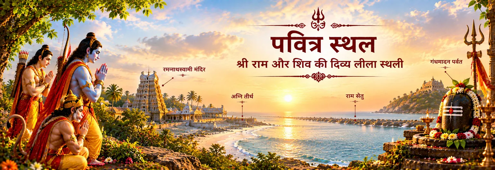

रामनाथस्वामी / रामेश्वर
आधुनिक रामेश्वरम् की तीर्थयात्रा के केंद्र में स्थित शिव-धाम। सेतु-माहात्म्य रामनाथ और रामेश्वर को राम द्वारा प्रतिष्ठित उसी लिंग के नाम बताता है।

पवित्र भूगोल
राम–शिव की रामेश्वरम् परंपरा केवल एक मंदिर तक सीमित नहीं है। यह सेतु, गंधमादन, रामेश्वर, कोटि तीर्थ और अन्य पवित्र तीर्थों से बने एक विस्तृत भूगोल में प्रकट होती है, जिन्हें तीर्थयात्रा और शास्त्रीय परंपरा में स्मरण किया गया है। ये सभी स्थान मिलकर भूगोल को भक्ति की कथा बना देते हैं।
इस पवित्र मानचित्र के लिए स्कंद पुराण का सेतु-माहात्म्य विशेष रूप से महत्वपूर्ण है। इसमें सेतु और गंधमादन के साथ अनेक तीर्थों का विस्तृत जाल मिलता है और बाद के अध्याय रामेश्वर की महिमा को विस्तार देते हैं। आधुनिक तीर्थ-सूचना भी रामनाथस्वामी मंदिर, अग्नि तीर्थ और गंधमादन पर्वतम को रामेश्वरम् की जुड़ी हुई यात्रा के अंगों के रूप में प्रस्तुत करती है।
इस परंपरा में समुद्र से मंदिर, पर्वत से तीर्थ और सेतु से रामेश्वर तक की यात्रा स्वयं अर्थपूर्ण है। प्रत्येक स्थान राम की शिव के प्रति श्रद्धा के स्मरण में एक नई परत जोड़ता है।
पवित्र मानचित्र
आधुनिक रामेश्वरम् की तीर्थयात्रा के केंद्र में स्थित शिव-धाम। सेतु-माहात्म्य रामनाथ और रामेश्वर को राम द्वारा प्रतिष्ठित उसी लिंग के नाम बताता है।
स्कंद पुराण गंधमादन पर अनेक तीर्थों का वर्णन करता है और इसे सेतु से जुड़ा पर्वत बताता है। वर्तमान तीर्थ-परंपरा भी गंधमादन पर्वतम को राम के चरणचिह्नों से जुड़े रामेश्वरम् के ऊँचे पवित्र स्थलों में स्मरण करती है।
सेतु तीर्थ-परंपरा का एक पवित्र जल-स्थल। स्कंद पुराण इसे तीर्थों में विशिष्ट स्थान देता है और रामेश्वर-पूजा की कथा में प्रयुक्त पवित्र जल से जोड़ता है।
रामनाथस्वामी मंदिर के निकट समुद्रतट पर स्थित अग्नि तीर्थ जीवित तीर्थ-परंपरा का महत्वपूर्ण भाग है। आधुनिक आधिकारिक पर्यटन-सामग्री इसे तीर्थयात्रियों के पवित्र स्नान-स्थल के रूप में बताती है।
सेतु की पवित्र स्मृति पूरे भू-दृश्य को राम की व्यापक कथा से जोड़ती है। वाल्मीकि रामायण सेतु के निर्माण और सेना के पार जाने का वर्णन करती है, जबकि स्कंद पुराण सेतु के चारों ओर तीर्थ-भूगोल को विस्तार देता है।
शास्त्र और परंपरा
सभी स्रोत इन स्थलों का समान स्तर पर वर्णन नहीं करते। वाल्मीकि रामायण राम की समुद्र-यात्रा, सेतु-निर्माण और लंका-युद्ध की महाकाव्य कथा सुरक्षित रखती है। इसके विपरीत स्कंद पुराण का सेतु-माहात्म्य सेतु और रामेश्वरम् के पवित्र भूगोल पर केंद्रित तीर्थ-ग्रंथ है: इसमें तीर्थों की सूची, गंधमादन का वर्णन, रामेश्वर की प्रतिष्ठा और इस क्षेत्र की पवित्रता का विस्तार मिलता है।
बाद की तीर्थ-परंपरा इस प्रकार राम–शिव संबंध में एक भौगोलिक परत जोड़ती है। यहाँ केवल एक अलग कथा-प्रसंग नहीं, बल्कि एक क्रम दिखाई देता है: राम और सेतु, पवित्र पर्वत, तीर्थ और जल, और अंत में रामेश्वर — वह शिव-धाम जिसका नाम ही राम के संबंध को स्मरण कराता है।
भक्ति-चिंतन
तीर्थयात्रा स्मृति को एक भौतिक मार्ग देती है। पर्वत, जल, तट और मंदिर भक्ति और स्थान के संबंध की याद बन जाते हैं।
रामेश्वरम् की परंपरा राम को शिव का सम्मान करने वाले भक्त के रूप में प्रस्तुत करती है। यह देव-परंपराओं के बीच विभाजन के बजाय श्रद्धा और सम्मान की अभिव्यक्ति बनती है।
तीर्थ हमें याद दिलाते हैं कि पूजा केवल विचार नहीं है। वह स्नान, अर्पण, प्रार्थना, यात्रा और शांत स्मरण के रूप में भी व्यक्त होती है।
रामेश्वर, रामनाथ, सेतु, गंधमादन और विभिन्न तीर्थ एक जुड़े हुए पवित्र भू-दृश्य का हिस्सा हैं। ये नाम भक्त को एक ही तीर्थयात्रा के अलग-अलग आयामों का स्मरण कराते हैं।
एक शांत चिंतन
कल्पना कीजिए कि यात्रा उस समुद्र से शुरू होती है जहाँ राम के सेतु का स्मरण है। फिर गंधमादन की ओर बढ़िए, जहाँ पवित्र पर्वत स्वयं तीर्थयात्रा का भाग बन जाता है। तीर्थों के जल से होते हुए रामेश्वर के सम्मुख पहुँचिए। बाहरी यात्रा एक मानचित्र है; भीतर की यात्रा विनम्रता, स्मरण और भक्ति की है।
भक्तों के सामान्य प्रश्न
रामेश्वरम् का श्री रामनाथस्वामी मंदिर आधुनिक तीर्थयात्रा का प्रमुख शिव-धाम है। स्कंद पुराण रामनाथ और रामेश्वर को राम द्वारा प्रतिष्ठित लिंग के नाम बताता है।
आवश्यक नहीं। गंधमादन नाम अलग-अलग पवित्र और भौगोलिक परंपराओं में मिलता है। यहाँ रामेश्वरम्/सेतु तीर्थ-परंपरा के गंधमादन की बात हो रही है; इसे समान नाम वाले अन्य पर्वतों के साथ मिला देना उचित नहीं है।
नहीं। वाल्मीकि रामायण सेतु, समुद्र-पार जाने और लंका-युद्ध की महाकाव्य कथा देती है। विस्तृत तीर्थ-भूगोल और रामेश्वरम् की तीर्थ-कथाएँ विशेष रूप से बाद के ग्रंथों, जैसे स्कंद पुराण के सेतु-माहात्म्य, में मिलती हैं।
परंपरा राम और शिव के बीच श्रद्धा को पूजा, तीर्थयात्रा और पवित्र स्मृति के माध्यम से प्रस्तुत करती है। सेतु, पर्वत, तीर्थ और रामेश्वर की जुड़ी हुई श्रृंखला इस संबंध को भूगोल में व्यक्त करती है।
यात्रा आगे बढ़ाएँ
पवित्र स्थलों की यह यात्रा राम–शिव पुस्तकालय के इस अध्याय को पूरा करती है, लेकिन परंपरा शास्त्र, भक्ति और जीवित साधना में आगे चलती रहती है। रामेश्वरम् से अब यात्रा व्यापक शिव पुराण-संग्रह और महादेव से जुड़े भक्तिपूर्ण अनुभवों की ओर लौटती है।